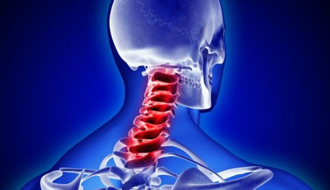
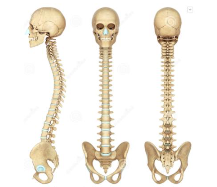
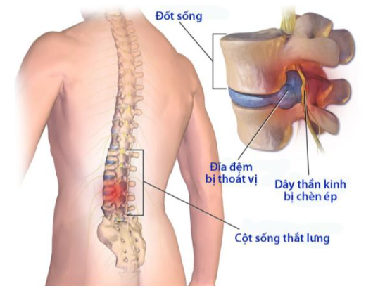

Thoái hóa cột sống - Thoát vị đĩa đệm
1. Thoái hóa cột sống
Thoái hóa cột sống là bệnh mạn tính, tiến triển từ từ. Mức độ đau sẽ tăng dần khiến người bệnh bị hạn chế vận động, cột sống bị biến dạng mà không có viêm. Bệnh dẫn đến các tổn thương: Thoái hóa sụn khớp và đĩa đệm cột sống, kèm theo các thay đổi ở phần xương dưới sụn và màng hoạt dịch.
1.1. Nguyên nhân gây thoái hóa cột sống
Thoái hóa cột sống bắt nguồn từ nhiều yếu tố: Tuổi cao, giới tính nữ, phải lao động nặng. Một số nguyên nhân khác như: Tiền sử chấn thương cột sống, bất thường trục chi dưới, tiền sử phẫu thuật cột sống, yếu cơ, do di truyền.
Thoái hóa cột sống là bệnh lý thường gặp ở người lớn tuổi.
1.2. Triệu chứng của thoái hóa cột sống
Thoái hóa cột sống hay gặp nhất là thoái hóa cột sống cổ và cột sống thắt lưng.Thoái hóa đoạn cột sống lưng ít gặp hơn. Triệu chứng bệnh thường gặp khi thoái hóa cột sống: Đau cột sống âm ỉ, đau có tính chất cơ học (đau tăng khi vận động và giảm đi khi nghỉ ngơi), có thể cứng cột sống vào buổi sáng (dưới 30 phút). Khi thoái hóa ở giai đoạn nặng, có thể đau liên tục. Bệnh nhân có cảm giác lục khục khi cử động cột sống. Thoái hóa cột sống để lâu ngày, không có phương pháp điều trị phù hợp có thể dẫn đến các biến chứng như:
+ Bị đau rễ thần kinh (đau cổ gáy lan ra vai và tay, đau thắt lưng lan xuống mông và chân) khi thoái hóa cột sống có các gai xương hoặc thoát vị đĩa đệm gây hẹp lỗ liên hợp, hẹp ống sống.
+ Có thể có biến dạng gây gù, vẹo cột sống.
+ Không có các triệu chứng toàn thân: Sốt, gầy sút, thiếu máu.
Thoái hóa cột sống có thể tiến triển thành vẹo cột sống nếu không được điều trị sớm
1.3. Chẩn đoán thoái hóa cột sống
+ Dựa vào các triệu chứng lâm sàng
+ Cận lâm sàng: Chụp X quang, MRI cột sống sẽ đánh giá được tình trạng đốt sống, đĩa đệm và các rễ thần kinh
+ Một số xét nghiệm khác để loại trừ các bệnh gây đau cột sống khác như: Viêm cột sống dính khớp, lao cột sống
1.4. Phòng chống bệnh thoái hóa cột sống
+ Tránh bê, mang, vác xách nặng, hoặc đội vật nặng
+ Ngồi đúng tư thế. Tuy nhiên, không ngồi lâu một tư thế
+ Không làm các động tác vặn người, với hoặc cúi gập quá mức
+ Tránh các động tác rung giật
+ Không để bị thừa cân, béo phì
+ Khi đã có thoát vị đĩa đệm cột sống thắt lưng nên hạn chế chạy nhảy, đi bộ mà nên bơi, treo xà đơn
+ Thường xuyên tập các bài tập cho cột sống
+ Người lao động nặng cần kiểm tra sức khỏe định kỳ
2. Thoát vị đĩa đệm
Thoát vị đĩa đệm: Nguyên nhân, triệu chứng, chẩn đoán và điều trị Đĩa đệm là phần nằm giữa các đốt sống, xung quanh là lớp vỏ, ở giữa là nhân nhầy. Đĩa đệm có tác dụng chịu áp lực do cột sống đè lên, tạo sự mềm dẻo cho cột sống. Thoát vị đĩa đệm là tình trạng xảy ra khi nhân nhầy của đĩa đệm cột sống chệch ra khỏi vị trí bình thường, xuyên qua dây chằng chèn ép vào các rễ thần kinh gây tê bì, đau nhức. Vậy nguyên nhân và triệu chứng của bệnh là gì?
2.1. Tổng quan bệnh thoát vị đĩa đệm
Thoát vị đĩa đệm là một thuật ngữ chỉ tình trạng xảy ra khi nhân nhầy của đĩa đệm cột sống chệch ra khỏi vị trí bình thường, xuyên qua dây chằng chèn ép vào các rễ thần kinh gây tê bì, đau nhức. Tình trạng này thường là kết quả của sang chấn hoặc do đĩa đệm bị thoái hóa, nứt, rách, có thể xảy ra ở bất kì khu vực nào của cột sống. Trên thực tế, thường hay gặp hiện tượng đau lan tỏa từ thắt lưng xuống chân (đau dây thần kinh tọa) do thoát vị đĩa đệm ở cột sống thắt lưng là phổ biến nhất
2.2. Nguyên nhân bệnh thoát vị đĩa đệm
Một số nguyên nhân thoát vị đĩa đệm chính mà một người có thể gặp phải như sau:
+ Do làm việc, vận động, lao động quá sức hoặc sai tư thế, dẫn đến đĩa đệm và cột sống bị tổn thương
+ Do tuổi tác: là nguyên nhân mà đa số các bệnh nhân gặp phải. Khi quá trình lão hóa diễn ra, đĩa đệm và cột sống bị mất nước, thoái hóa xơ cứng và rất dễ dàng bị tổn thương
+ Do chấn thương ở vùng lưng
+ Các bệnh lý bẩm sinh như hoặc mắc phải ở vùng cột sống như gù vẹo, thoái hóa cột sống...
+ Yếu tố di truyền
Ngoài ra, có một số yếu tố nguy cơ của bệnh thoát vị đĩa đệm như:
+ Cân nặng của cơ thể: cân nặng của cơ thể càng lớn, gánh nặng cho những đĩa đệm cột sống càng cao, đặc biệt là ở khu vực thắt lưng
+ Nghề nghiệp: các đối tượng lao động chân tay, mang vác nặng, sai tư thế đều có nguy cơ cao mắc thoát vị đĩa đệm
2.3. Triệu chứng bệnh thoát vị đĩa đệm
Một số triệu chứng thoát vị đĩa đệm điển hình bao gồm:
+ Đau nhức tay hoặc chân: Bệnh nhân có những cơn đau đột ngột ở vùng cổ, thắt lưng, vai gáy, cổ và chân tay khi mắc bệnh, sau đó lan ra vùng vai gáy, chân tay. Tính chất đau có thể âm ỉ vài ngày, vài tuần hoặc vài tháng hoặc rất dữ dội, đau nặng hơn khi vận động, đi lại, giảm đi khi nghỉ một chỗ.
+ Triệu chứng tê bì tay chân: nhân nhầy của đĩa đệm thoát ra ngoài sẽ chèn ép rễ thần kinh gây đau nhức, tê bì vùng thắt lưng, vùng cổ sau đó dần dần phát triển xuống mông, đùi, bẹn chân và gót chân. Lúc này người bệnh sẽ bị rối loạn cảm giác, luôn thấy mình như bị kiến bò trong người,...
+ Yếu cơ, bại liệt: xuất hiện khi bệnh ở giai đoạn nặng, thường sau một thời gian dài mới phát hiện được. Giai đoạn này người bệnh khó có thể đi lại vận động, dần dần dẫn tới teo hai chân, teo cơ, liệt các chi phải ngồi xe lăn
Cũng có những trường hợp bệnh nhân thoát vị đĩa đệm tuy nhiên không có triệu chứng gì. Theo đó, bệnh nhân cần tới bệnh viện và tham khảo ý kiến bác sĩ phòng khám ngay khi có những biểu hiện sau:
+ Đau, tê bì, yếu cơ ngày càng nặng, ảnh hướng nhiều đến sinh hoạt thường nhật
+ Tình trạng són tiểu hoặc bí tiểu
+ Tình trạng mất cảm giác tại các vùng gọi là “yên ngựa” trên cơ thể như bắp đùi trong, phía sau chân, vùng quanh hậu môn
Thoát vị đĩa đệm nếu không được điều trị sớm sẽ để lại những biến chứng nặng nề:
+ Khi nhân nhầy chui vào trong ống sống, chèn ép rễ thần kinh, làm hẹp khoang sống sẽ khiến bệnh nhân có nguy cơ bị liệt nửa người hoặc bại liệt cả người.
+ Hội chứng đuôi ngựa: rễ thần kinh vùng thắt lưng bị chèn ép, khiến việc đi đại tiện không kiểm soát.
+ Không vận động lâu ngày sẽ khiến cơ trở nên suy yếu, bị teo, các chi teo nhanh chóng, chân tay bé lại, khả năng đi lại, vận động giảm sút.
+ Rối loạn cơ vòng: Khi rễ thần kinh bị tổn thương có thể gây ảnh hưởng đến cơ vòng đường tiểu: bí tiểu, sau đó lại đái dầm dề, nước tiểu chảy rỉ ra một cách thụ động
Thoát vị đĩa đệm nếu không được điều trị sớm sẽ để lại những biến chứng nặng nề.
2.4. Đối tượng nguy cơ bệnh thoát vị đĩa đệm
Các đối tượng lao động chân tay, mang vác nặng, sai tư thế, người thừa cân, người có tiền sử gia đình đều có nguy cơ cao mắc thoát vị đĩa đệm
2.5. Đối tượng nguy cơ bệnh thoát vị đĩa đệm
Các biện pháp phòng ngừa thoát vị đĩa đệm có thể thực hiện như sau:
+ Tập luyện thể dục thể thao bằng các môn thể thao vừa sức, tăng độ dẻo dai của các cơ cạnh cột sống. Điều này có thể giúp làm ổn định cột sống, giảm nguy cơ tổn thương đĩa đệm
+ Không mang vác, vận động quá sức hoặc sai tư thế
+ Duy trì cân nặng phù hợp với chiều cao, tránh duy trì áp lực quá nặng lên cột sống.
2.6. Các biện pháp chẩn đoán bệnh thoát vị đĩa đệm
Trong quá trình thăm khám lâm sàng, bác sĩ sẽ kiểm tra mức độ căng cứng của vùng lưng. Bác sĩ sẽ yêu cầu bệnh nhân nằm xuống và di chuyển chân theo nhiều tư thế khác nhau để xác định nguyên nhân đau. Bác sĩ cũng có thể thực hiện các test về thần kinh để kiểm tra mức độ thả lỏng, trương lực cơ, khả năng đi lại, khả năng cảm nhận kích thích. Trong đa số các trường hợp, thăm khám lâm sàng kết hợp với khai thác tiền sử đủ để kết luận bệnh. Nếu nghi ngờ nguyên nhân khác hoặc để xác định rõ vùng nào bị tổn thương, bác sĩ có thể thực hiện thêm một số xét nghiệm:
+ Chẩn đoán hình ảnh: bao gồm chụp X quang, chụp CT, chụp MRI, chụp cản quang. Các phương pháp này đều cung cấp những hình ảnh có giá trị chẩn đoán khác nhau, phục vụ việc kết luận chính xác tình trạng của bệnh nhân
+ Test thần kinh: phương pháp đo điện cơ xác định mức độ lan truyền của xung thần kinh dọc theo các mô thần kinh. Phương pháp giúp xác định phần dây thần kinh bị tổn hại
2.7. Các biện pháp chẩn đoán bệnh thoát vị đĩa đệm
Điều trị thoát vị đĩa đệm bảo tồn, chủ yếu tránh những tư thế gây đau và giúp bệnh nhân tuân thủ kế hoạch luyện tập và dùng thuốc sẽ giúp bệnh nhân giảm triệu chứng trong thời gian ngắn. Các nhóm thuốc có thể được sử dụng là thuốc giảm đau, thuốc giãn cơ, corticoid đường tiêm. Nếu các biện pháp trên không giải quyết được triệu chứng trong vài tuần, bác sĩ sẽ trực tiếp sử dụng phương pháp y học cổ truyền, vật lý trị liệu để điều trị.
Một tỉ lệ nhỏ bệnh nhân thoát vị đĩa đệm cần được phẫu thuật. Bác sĩ có thể cân nhắc phương pháp phẫu thuật nếu điều trị bảo tồn không có tác dụng sau 6 tuần điều trị, đặc biệt khi bệnh nhân có những biểu hiện như yếu cơ, khó đứng, khó đi lại, mất kiểm soát cơ vòng.
Chế độ sinh hoạt phù hợp trong quá trình điều trị:
+ Trong thời gian điều trị thoát vị đĩa đệm, nên hạn chế các hoạt động mạnh, tăng cường nghỉ ngơi, tập thể dục nhẹ nhàng theo hướng dẫn của bác sĩ hoặc nhân viên y tế
Đi khám ngay nếu thấy các triệu chứng nặng hơn như: tê liệt ở chân, đau tê vùng bàn tọa, khó tiểu hoặc khó đại tiện hoặc bị yếu đột ngột ở bất kỳ bộ phận nào trên cơ thể, đặc biệt là chân.
Tránh nằm quá nhiều: nên nghỉ ngơi một thời gian ngắn sau đó đứng dậy thực hiện vận động nhẹ như đi lại, làm việc nhà do nằm quá nhiều gây cứng khớp cột sống và yếu cơ.
Thoát vị đĩa đệm là tình trạng xảy ra khi nhân nhầy của đĩa đệm cột sống chệch ra khỏi vị trí bình thường, xuyên qua dây chằng chèn ép vào các rễ thần kinh gây tê bì, đau nhức, từ đó ảnh hưởng nghiêm trong đến sức khỏe của người bệnh. Vì thế, khi có dấu hiệu và triệu chứng của bệnh, bạn nên đến các cơ sở y tế để thăm khám và điều trị.
Phòng khám chuyên khoa y học cổ truyền Hồng Ngọc là phòng khám đa khoa có chức năng thăm khám và điều trị các bệnh lý cơ xương khớp như viêm khớp, thoái hóa, thoát vị, đau nhức xương khớp,.... Tại Phòng khám cũng đã thực hiện chẩn đoán, điều trị bằng các phương pháp y học hiện đại với các bệnh lý cơ xương khớp, không chỉ đem lại hiệu quả cao mà còn hạn chế tối đa biến chứng bệnh tái phát. Có được thành công lớn là bởi Phòng khám luôn trang bị đầy đủ cơ sở vật chất hiện đại, các quy trình thăm khám, điều trị được thực hiện bởi đội ngũ bác sĩ giàu chuyên môn, kinh nghiệm sẽ đem lại kết quả điều trị bệnh tối ưu cho Quý khách hàng.
Hotline : 0345.164.999